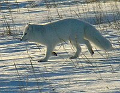

Росія розташована в східній частині Європи і північній частині Азії (суто євразійське розташування). Росія омивається водами 14 морів: на півночі це моря Північного Льодовитого океану — Баренцове, Біле, Карське, Лаптєвих, Східно-Сибірське і Чукотське море; на заході це моря Атлантичного океану — Балтійське (на північному заході), Чорне і Азовське море (на південному заході); на сході це моря Тихого океану — Берингове, Охотське і Японське море. Також на південному заході Росія має вихід до внутрішньоконтинентального Каспійського моря. Російська Федерація має найдовшу у світі берегову лінію — 37 653 км.
Її сусідами є КНДР (39,4 км), Китай (4209,3 км), Монголія (3485 км), Казахстан (7598,6 км), Азербайджан (350 км), Грузія (879,9 км), Україна (2245,8 км), Білорусь (1239 км), Литва (288,4 км), Польща (236,3 км), Латвія (270,5 км), Естонія (466,8 км), Фінляндія (1325,8 км) та Норвегія (219,1 км). Цілковито морем вона межує зі США (49 км) та Японією (194,3 км). Російська Федерація має найдовший кордон у світі — 60 933 км (з них 38 808 км — морський кордон).
Топографія Росії
Ландшафти Росії
Росія — євразійська країна, що межує з 14 іншими країнами: на заході — з Норвегією (спільний кордон — 191 км), Фінляндією (1309 км),Естонією (324 км), Латвією (332 км), Білоруссю (1312 км), Литвою і Польщею (Калінінградська область, 261 км і 210 км, відповідно), Україною (1944 км); на півдні — з Азербайджаном (338 км), Грузією (894 км), Казахстаном (7644 км), Монголією (3452 км), Китаєм (4133 км на Далекому Сході + 46 км на Алтаї), КНДР (18 км). Загальна довжина державного кордону — 22 408 км; найдовший державний кордон у світ. Загальна довжина морського узбережжя 37,65 тис. км. Згідно з Конвенцією Організації Об'єднаних Націй з морського права (UNCLOS) 1982 року, протяжність територіальних вод країни встановлено в 12 морських миль (22,2 км). Прилегла зона, що примикає до територіальних вод, в якій держава може здійснювати контроль необхідний для запобігання порушень митних, фіскальних, імміграційних або санітарних законів простягається на 24 морські милі (44,4 км) від узбережжя (стаття 33). Виключна економічна зона встановлена на відстань 200 морських миль (370,4 км) від узбережжя. Континентальний шельф — до глибин 200 м.
На території Російської Федерації відкрито понад 20 тис. родовищ корисних копалин. У надрах РФ виявлені і розвідані численні родовища нафти, природного газу, кам'яного вугілля, руд чорних, кольорових, рідкісних і благородних металів, рідкісноземельних елементів, гірничохімічної нерудної технічної сировини, дорогоцінних і виробних каменів та мінеральних будівельних матеріалів. Однак реальна кількісна оцінка запасів корисних копалин (к.к.) Росії утруднена, оскільки різні джерела наводять різні дані, які в окремих випадках різняться в рази.
Разом з тим, більшість родовища корисних копалин РФ — низької якості, вміст корисних компонентів у них на 35-50% нижче середньосвітових, крім того, в ряді випадків вони важкодоступні (віддаленість, відсутність транспорту, важкі кліматичні умови тощо). В результаті, незважаючи на наявність значних розвіданих запасів, ступінь їх промислового освоєння (частка запасів у експлуатації) досить низька: для бокситів — 32,6%; нефелінових руд — 55,4%; міді — 49%; цинку — 16,6%; олова — 42%; молібдену — 31,5%; свинцю — 8,8%; титану — 1,3%; ртуті — 5,9%.
Корисні копалини Росії
Ландшафти Росії
Річки країни належать басейнам трьох океанів: північ і Сибір — Північного Льодовитого, захід — Атлантичного, Далекий Схід — Тихого. На півдні значна територія відноситься до безстічного басейну Каспійського моря — водостічний басейн Волги. Найбільші річки: Лена, Іртиш, Єнісей, Об, Волга, Амур.
ОзераНайбільше число озер і водосховищ зосереджене в північно-західній Росії і Західному Сибіру.
Каспійське море на півдні Росії — найбільше озеро у світі. Протягом багатьох років це море відступало, оскільки стік річок, які в нього впадають, Волги, Уралу, Кури і Тереку, через спорудження численних водосховищ і зрошувальних систем у 1960-х роках, був менший за випаровування з його поверхні. У 1980-х роках рівень Каспійського моря почав підвищуватися, однак причини цієї зміни поки не зрозумілі.
Озеро Байкал в Сибіру — найбільш глибоке у світі озеро (1620 м). Тут зосереджено близько 20 % усіх запасів прісної води на поверхні Землі (23 тис. км³). У озеро впадає понад 300 великих і малих річок, а витікає з нього тільки одна — Ангара. Озеро Байкал тектонічного походження; воно утворилося понад 25 млн років тому.
Ладозьке озеро, розташоване на північному заході Росії, є найбільшим з озер Європи.
це всі представники тваринного світу, що мешкають на території Росії. У Росії мешкає близько 150 тисяч видів тварин, що складає близько 9 % всієї фауни світу. Одних тільки хребетних тварин налічується в Росії понад 1300 видів, а комах понад 70 000 видів. Інвентаризація фауни Росії не завершена.
Фауна Росії різноманітнішає і багатшає при русі з півночі на південь і від рівнин в гори. Число ендемічних і реліктових видів тварин різко зростає в горах.
Рослинний світодин із найважливіших компонентів природи, який представлено сукупністю різноманітних рослинних угруповань, що проростають на території Росії. Велика різноманітність кліматичних умов та ґрунтового покриву, а також вплив минулих геологічних епох і зростаючої діяльності людини, обумовлює існування безлічі типів рослинності, що мають складні взаємопоєднання.
Для Росії найбільш характерними є такі типи рослинності: тундровий, лісовий, степовий, пустельний, луковий і болотний
Флора Росії
Фауна Росії
Економічна карта Росії
Росія — індустріально-аграрна країна. Основні галузі промисловості: гірнича, нафтова, нафтопереробна, газова, металургійна (чорна та кольорова металургія), літако- та кораблебудування, космічна, машинобудівна, енергетичне обладнання, харчова та текстильна. У промисловості провідна роль належить важкій індустрії. У РФ добувають усі види мінерального палива, а також більшість видів мінеральної сировини. Є три бази чорної металургії (Уральська, Центральна, Сибірська), різноманітні галузі кольорової металургії. Розвинені всі види транспорту, але величезні простори Сибіру практично не мають залізниць та сучасних автодоріг через відсутність населення. Натомість діють системи магістральних нафто- і газопроводів. Морський транспорт забезпечує значну частину перевезень. Найважливіші порти: Санкт-Петербург, Калінінград, Мурманськ, Архангельськ, Новоросійськ, Владивосток, Находка і інші.
Росія поділяється на 11 великих економічних районів: Північно-Західний, Північний, Центральний, Волго-В'ятський, Центрально-Чорноземний, Поволзький, Північнокавказький, Уральський, Західносибірський, Східносибірський і Далекосхідний.
Видобуток нафти й газу зосереджений у Західному Сибіру, гідроелектростанції, кольорова металургія і лісова промисловість — у Східному Сибіру. На Далекому Сході видобувають золото, алмази, він славиться рибою і морепродуктами. У Північному районі основними галузями є добування вугілля, нафти, газу, апатитів, нікелю та інших металів, а також заготівля лісу і вилов риби. У Північно-Західному, Центральному, Волго-В'ятському, Уральському і Поволзькому районах розвинуті машинобудування, хімічна, легка, харчова промисловість, енергетика і сфера послуг. Центрально-Чорноземний район і Північний Кавказ мають розвинуте сільське господарство й харчову промисловість.
Портер Пушкіна
На мою думку найбільш видатнішими росіянами вважають: